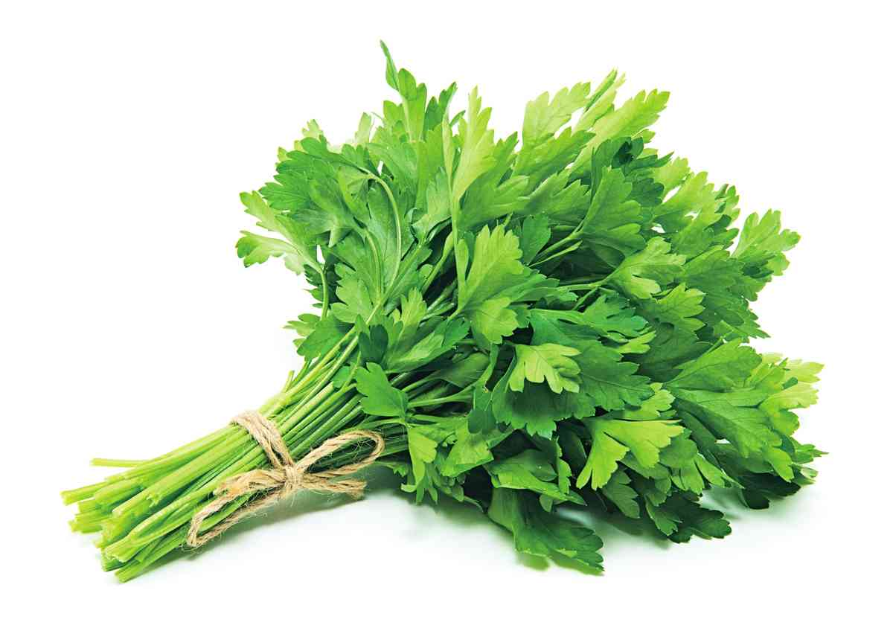
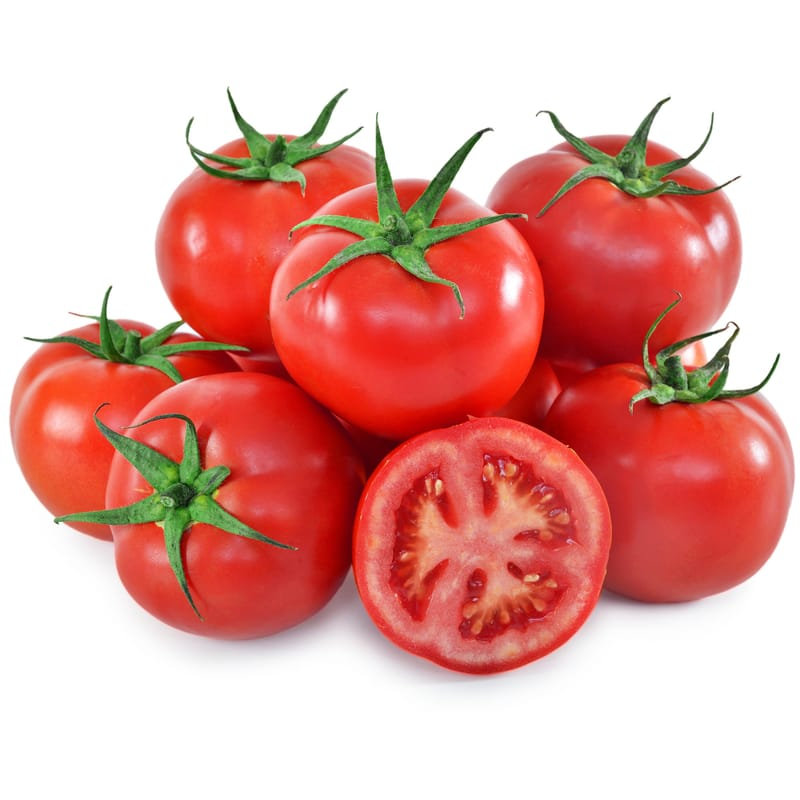
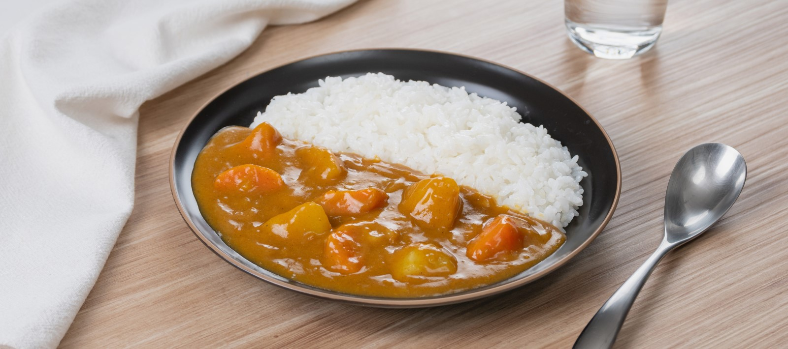
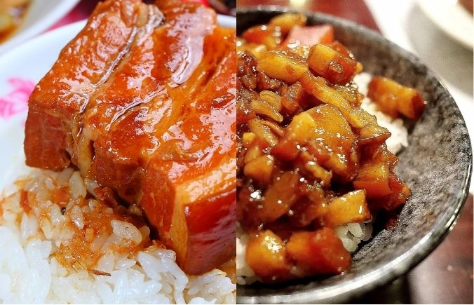
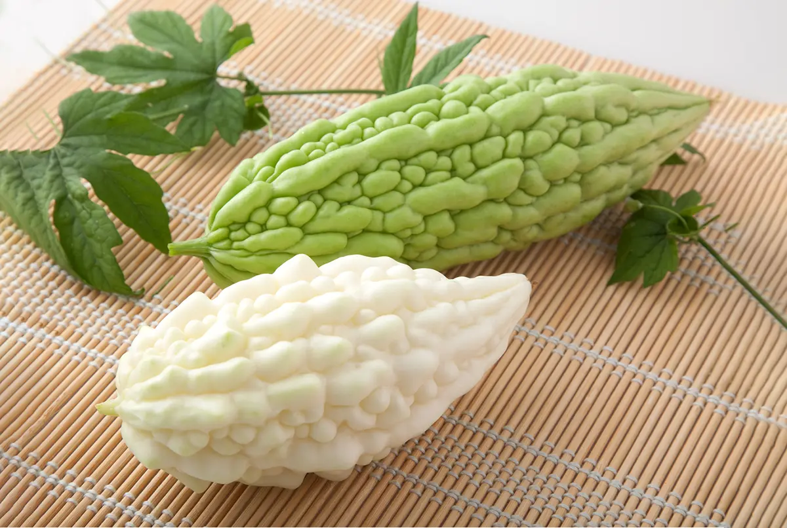

戰爭一：你吃香菜嗎？我是不吃啦
請點擊上方按鈕選擇你的流派，此處將顯示對應論點...

戰爭二：番茄是水果還是蔬菜？
請點擊上方按鈕選擇你的流派，此處將顯示對應論點...

戰爭三：吃咖哩飯要不要攪拌？
請點擊上方按鈕選擇你的流派，此處將顯示對應論點...

戰爭四：滷肉飯是肉燥還是控肉？
請點擊上方按鈕選擇你的流派，此處將顯示對應論點...

戰爭五：苦瓜是不是給人吃的東西？
請點擊上方按鈕選擇你的流派，此處將顯示對應論點...